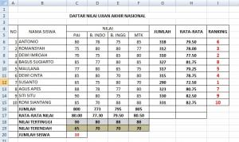
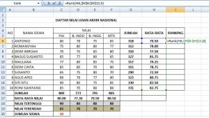
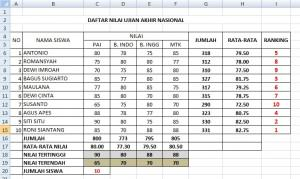
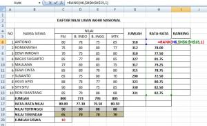

RANK: peringkat
RANK menentukan urutan peringkat sebuah angka di antara angka lain.
Coba langsung di browserLembar kerja mini, kuis, dan tanda selesai.
Buka versi interaktif=RANK(angka; rentang; [urutan])
| angka | Nilai yang dicari peringkatnya |
|---|---|
| rentang | Seluruh nilai pembanding, kunci dengan $ |
| urutan | 0 atau kosong = terbesar peringkat 1; 1 = terkecil peringkat 1 |
Langkah praktik
- Hitung total atau rata-rata tiap siswa.
- Di sel peringkat ketik =RANK(E2;$E$2:$E$6).
- Tanda $ mengunci rentang agar tidak bergeser saat rumus disalin ke bawah.
- Seret ke bawah.
Tips
Dua nilai sama menghasilkan peringkat yang sama, dan peringkat berikutnya dilewati.
Tangkapan layar praktik
4 gambar langkah demi langkah. Klik gambar untuk membuka ukuran penuh.



